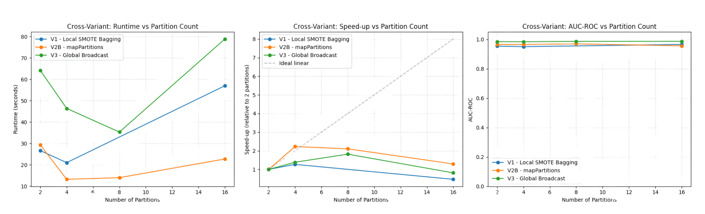
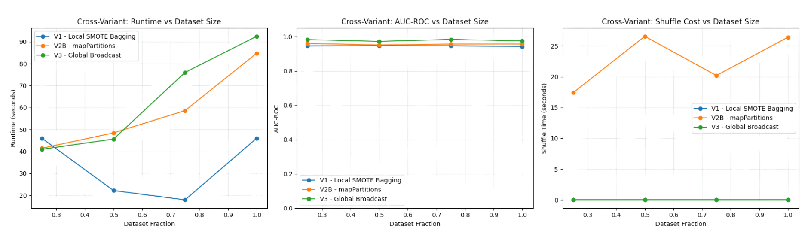

SCALABLE ML / CASE STUDY
Credit Card Fraud Detection at Scale
Comparing three distributed SMOTEBagging designs using PySpark and Databricks on highly imbalanced credit-card transactions.
Academic modelling results from an experimental dataset. No production fraud monitoring or transaction decisions were deployed.
The question
What trade-offs appear when different distributed SMOTE-bagging implementations are evaluated for highly imbalanced credit-card fraud classification?
What I built
I compared three Spark approaches using an 80/20 stratified split: local partition-level SMOTEBagging (V1), stratified-repartitioned local SMOTEBagging (V2A and V2B) and a global minority-broadcast variant (V3). I evaluated AUPRC, precision, recall, AUC-ROC, training runtime and scaling across partitions and dataset fractions.
What I found
In the reported experiment, stratified-repartitioned V2B gave a useful balance between speed and fraud detection performance: 20.61 seconds training time and AUPRC 0.8311 at threshold 0.5. V3 achieved stronger AUC-ROC (0.9846) but much lower precision (0.2217) at that threshold. No design dominated every metric.
Things I kept in mind
Only 492 of 284,807 transactions were fraud cases, about 0.17%. AUPRC and threshold trade-offs therefore matter much more than headline accuracy. The dataset and runtime experiments are limited in scale, and the results should not be presented as production fraud-system benchmarks.
Project visuals
Selected real plots and diagrams from my modelling work.
Each figure below includes the question it helps answer, what you are looking at and the conclusion or limitation worth noticing. Open the image at full size if you want to inspect individual labels.

Partition scaling
How the distributed designs respond to partitions
The plot compares training time, relative speed-up and AUC-ROC as Spark partitions increase from 2 to 16 for local, stratified-repartitioned and minority-broadcast SMOTEBagging.
The takeaway: V2B offered a practical runtime and minority-coverage balance; V3 kept ranking quality stable but introduced broadcast overhead.

Dataset-size scaling
Does performance hold as data grows?
These plots compare runtime and ranking metrics when the data is sampled at 25%, 50%, 75% and 100%, keeping class imbalance broadly consistent.
The takeaway: The limited-scale experiments suggest a useful trade-off, but they do not establish production-scale Spark performance across much larger clusters.